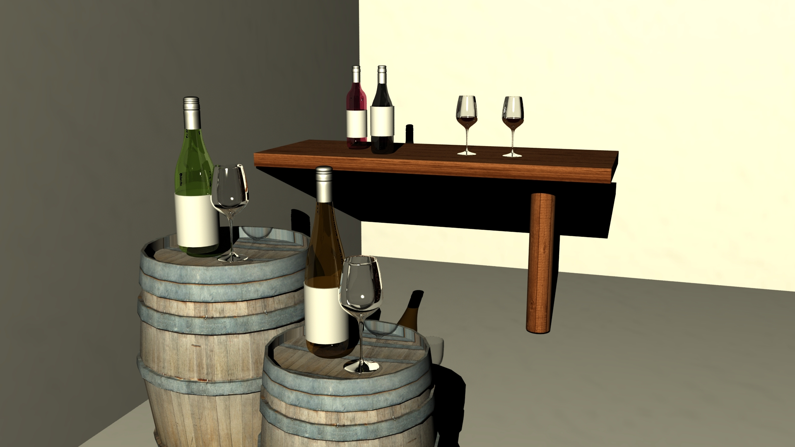

Portfolio 1
For the first portfolio assignment, I have created an interior space of a wine shop by implementing various winery objects. The reason for this environmental space is to be able to start modelling for my team's final project where one of the scenes takes place here. Even though this project is to generate photorealism renderings, with slight adjustments and a change of rendering method, it can simply be altered to a cartoon-style.
To read more on the project documentation, follow the following link: Ng_JN_spec.pdf
In the three images below, they are an intent to use sunlight lighting through a point light, as well as giving a light orange-yellow colour to create a soft atmosphere inside the space. In terms of the third image, there is an attempt to use depth of field by putting the focus on the wine glass and bottle while the side of the wine rack is blurred using a high f-stop.
As for the other three renders below, it is a simulation of a night scene where a darker orange-yellow coloured point light has been use to give a night light effect from outdoor lamps. For the second image, a depth of field has been played by focusing on the wine bottle and glass while blurring the background wine bottles and rack through the use of a high f-stop as well.
References =
http://www.nordicfx.net/wp-content/uploads/2011/07/barrel_001_nordicfxnet_diffuse_reduced.jpg
http://crossfitinlandvalley.com/wp-content/uploads/2013/03/eisch-breathable-wine-glass-1.jpg
http://steampunker.de/typo3temp/pics/89c58ed2f2.jpg
http://www.hansenwholesale.com/images/murrayfeiss/lighting/1200/P1240DAB.jpg
http://www.genevievegauvin.com/wp-content/uploads/2012/07/Vintage-Grunge-Wooden-Textures_WebTexture_net-72DPI.png
http://wallfoy.com/white-14-63207-wallpapers-HD.html
http://www.la-petite-tour.nl/wp-content/uploads/2013/11/wijn.png
http://s2.hubimg.com/u/1705853_f248.jpg
{kind=link}
{kind=link}
{kind=link}
{kind=link}
{kind=link}
{kind=link}
{kind=link}
Zipped file = janicen_port1.zip
Homework
In order to further elaborate the technique of Set Driven Key feature in Maya from this exercise, I have decided to create 3 different systems based off my final group project. With these functions, I hope to have gain skills to improve the productivity of the project progression.
In terms of research, there are various examples and methods for using the set-driven key feature found in Maya which becomes a powerful animation tool. The two examples that I have found which will be guide tutorials for my animation portfolio 2 and team project consist of creating eye movement in the character and the character bouncing a ball.
Reference 1: Bouncing Ball
http://www.youtube.com/embed/REBPuOMKEuM
Reference 2: Eye Movement
http://www.youtube.com/embed/lpOG4Qz8LEo
The first system seen below consists of creating eye movement for the main character in numerous scenes. The guidelines are currently visible to show how by affecting them, then movement in the eyeballs will adjust accordingly.
The second function created is currently still an experimental idea of the first scene, after the character goes into a new environment of a 3D space from a 2D space and how this scene can lead to another scene such as the next system build. Here, when the robot ball slowly emerges out of the garbage can, then the lid of the garbage can will raise as well.
Lastly, a continuation from the previous set driven key system, the character Otis the robot will follow the ball confusingly, where the ball allows Otis to explore the 3D world, possibly acting as a tour guide.
Zipped file = janicen_individualhomework.zip